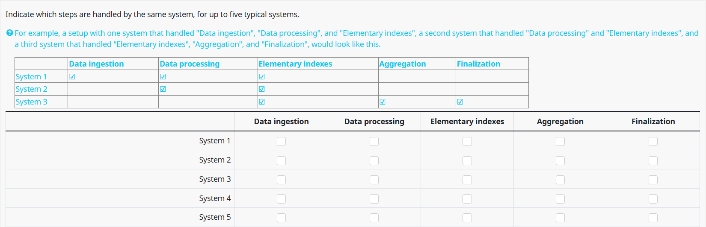
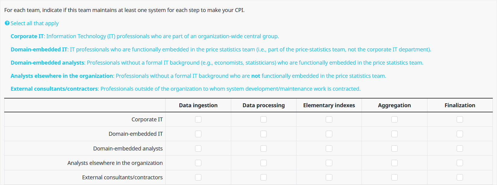

| Ingest | Process | Elementals | Aggregate | Finalize | |
|---|---|---|---|---|---|
| System Group 1 | TRUE | TRUE | TRUE | TRUE | TRUE |
| System Group 2 | FALSE | FALSE | FALSE | FALSE | FALSE |
| System Group 3 | FALSE | FALSE | FALSE | FALSE | FALSE |
| System Group 4 | FALSE | FALSE | FALSE | FALSE | FALSE |
| System Group 5 | FALSE | FALSE | FALSE | FALSE | FALSE |
3 Systems and Teams Analysis
Our first objective in this analysis is to describe the kinds of system and team organizations we encountered in our survey. We start with an explanation of our methodology, followed by some notable findings.
3.1 Steps Where Systems are Coupled
One important piece of system architecture information we were interested in is cases where systems span more than one GSBPM step along the flow of change. Using our definition of “system” from Chapter 2, a system that spans two or more GSBPM steps implies that it would not be straightforward to modify just one GSBPM step in the system without affecting the others1. This relates to the concept of coupling in software engineering, which measures the extent to which distinct software modules depend on each other.

We asked the following question to get a coarse-grained understanding of systems that spanned more than one GSBPM step.

We note how frequently systems cross certain GSBPM steps in Table 3.1.
| Data ingestion | Data processing | Elementary indexes | Aggregation | Finalization | Frequency |
|---|---|---|---|---|---|
| ✅ | ✅ | ❌ | ❌ | ❌ | 21 |
| ❌ | ✅ | ✅ | ❌ | ❌ | 6 |
| ❌ | ❌ | ✅ | ✅ | ❌ | 0 |
| ❌ | ❌ | ❌ | ✅ | ✅ | 6 |
| ✅ | ✅ | ✅ | ❌ | ❌ | 12 |
| ❌ | ✅ | ✅ | ✅ | ❌ | 8 |
| ❌ | ❌ | ✅ | ✅ | ✅ | 11 |
| ❌ | ✅ | ✅ | ✅ | ✅ | 4 |
| ✅ | ✅ | ✅ | ✅ | ✅ | 20 |
The most common pattern we observed was that the same system handled both data ingestion and data processing with 21 occurrences. We suspect this is is fairly common as the two activities are conceptually similar, and often leverage similar tooling. For example, if an analyst wrote a web-scraping script to collect price data from a certain website, it’s reasonable that they would also perform some data cleaning activities in the same script before writing the output to persistent storage.
The second most common pattern we observed was the “Monolith” pattern, where we observe one system spanning all 5 GSBPM steps 20 times. We elaborate on this concept later in this section, but our suspicion is that systems like these mostly fall into one of two categories: (1) a small team and an Excel Workbook that handles everything from ingestion to finalization or (2) a single system managed by an IT team.
Monolithic systems are not inherently bad. If they are carefully designed for maximum cohesion and minimal coupling, they can be maintainable. However, if monoliths emerge accidentally, they often involve many tightly coupled components and become very difficult to maintain in the long run.
The next two most frequent coupling patterns are ingestion-processing-elementary indexes (12 occurrences) and elementary indexes-aggregation-finalization (11 occurrences). The latter makes some sense to us as these three concerns can be quite bespoke and tailored to the price statistics business domain. The former, however, surprised us as ingestion and processing are fairly generic data preparation activities, while elementary index calculation is a highly specific price statistics activity.
We were also surprised to learn that there are zero occurrences of a system spanning elementary indexes-aggregation. In the price statistics business domain, these concepts are often closely related, so we thought there would be more cases where a single system handled both steps2.
3.2 Team Types at Each Step
The next concept we try to learn in the survey is which types of teams discussed in Chapter 2 are present at each GSBPM step in the flow of change.
We present respondents with the following question.

| Corporate IT | Domain IT | Domain Analysts | Other Analysts | Consultants | Team Type | Frequency |
|---|---|---|---|---|---|---|
| ❌ | ❌ | ✅ | ❌ | ❌ | Domain Analyst Only | 120 |
| ❌ | ✅ | ✅ | ❌ | ❌ | Domain Analysts and Domain IT | 25 |
| ✅ | ❌ | ❌ | ❌ | ❌ | Corporate IT-Only | 33 |
| ❌ | ✅ | ❌ | ❌ | ❌ | Domain IT-Only | 20 |
| ✅ | ✅ | ❌ | ❌ | ❌ | IT-Only | 11 |
| ✅ | ❌ | ✅ | ❌ | ❌ | Corporate IT and Domain Analysts Only | 45 |
Table 3.2 shows how frequently certain team combinations were reported within any given GSBPM step.
We were surprised to see that Corporate IT and Domain Analyst teams occurred almost twice as frequently as teams with Domain-embedded IT and Domain-embedded analysts. In particular, this suggests that technical expertise offered by IT personnel is often centralized outside of the domain area rather than functionally embedding IT personnel within the domain team.
3.3 Capturing System And Team Organizations Together
3.4 Commonly Occurring System and Team Topologies
We begin by sharing some commonly occurring system and team topologies that occurred in our responses.
We perform k-means clustering with a cluster size of 3 on each respondent’s answer the “system topology” part of the Representative System Group question3.
We were not able to find any rule or explanation that perfectly split respondents into some number of clusters for this question.
However, we were able to identify some high-level patterns that were consistent across the 3 groups. We use these patterns to characterize 3 archetypes that are explained below along with some illustrative examples from each cluster.
3.4.1 One or more System Groups Span the Entire Flow of Change
3.4.2 There is exactly one “split point” between System Groups
| Ingest | Process | Elementals | Aggregate | Finalize | |
|---|---|---|---|---|---|
| System Group 1 | TRUE | TRUE | FALSE | FALSE | FALSE |
| System Group 2 | FALSE | FALSE | TRUE | TRUE | TRUE |
| System Group 3 | FALSE | FALSE | FALSE | FALSE | FALSE |
| System Group 4 | FALSE | FALSE | FALSE | FALSE | FALSE |
| System Group 5 | FALSE | FALSE | FALSE | FALSE | FALSE |
3.4.3 There are two or more split points between system groups
| Ingest | Process | Elementals | Aggregate | Finalize | |
|---|---|---|---|---|---|
| System Group 1 | TRUE | FALSE | FALSE | FALSE | FALSE |
| System Group 2 | FALSE | TRUE | FALSE | FALSE | FALSE |
| System Group 3 | FALSE | FALSE | TRUE | TRUE | TRUE |
| System Group 4 | FALSE | FALSE | FALSE | FALSE | FALSE |
| System Group 5 | FALSE | FALSE | FALSE | FALSE | FALSE |
3.5 Assigning Architectures to Organizations
We use responses to the Representative System Group question to assign NSOs to one of the three architecture types defined below.
3.5.1 Monolithic Architecture
We assume that an NSO has a monolithic architecture if any of their system groups span all 5 GSBPM steps4,5.
Our reasoning for this assumption is that if the respondent thought a system group spanning all 5 GSBPM steps was similar enough that there was no need to split any subset of it into a second system group, it is probably due to coupling between one or more systems in the system group.
It is important to note that since we do not ask questions about the quantity or span of systems, we cannot know for certain whether or not a system group spanning all 5 GSBPM steps is truly monolithic6.
For example, a system group that spans all 5 GSBPM steps could be comprised of one system that truly is monolithic with respect to the 5 GSBPM steps, or it could be comprised of 5 or more distinct systems that the respondent felt were sufficiently representative of their typical workflow7.
Nevertheless, we needed to make some simplifying assumptions to make the response burden of this survey realistic, and we do not believe this assumption is too far fetched.
3.5.2 Hybrid Architectures
We classify any NSO that (1) is not a monolith and (2) has exactly two system groups with any split between them as having a Hybrid architecture type.
Our rationale for this category is to look at cases where there is one “boundary point” between two distinct system groups.
3.5.3 Modular Architectures
We classify any NSO that (1) is not a monolith, (2) is not a hybrid, and (3) has three or more system groups with any splits between them as having a Modular architecture type.
While this kind of architecture is not necessarily perfectly modular, there are definitely two or more “boundary points” between three or more distinct systems.
There are a couple of important points to note about Hybrid and Modular architectures as defined above.
Unlike Monolithic architectures where we have to make an assumption about the internal structure of a system group, here we know for certain that there are explicit “boundary points” between two system groups that the respondent deemed sufficiently different to not be grouped together.
Using our definition of Systems given in Chapter 2, Hybrid and Modular architectures are guaranteed to pass output data from one system as input data to another system at least once8.
3.6 Assigning Team Types to Organizations
We assign each organization one or more of the following team types using the following definitions.
Stream Aligned team: A system group is maintained by domain-analysts, domain-IT, or both.
IT-Only team: A system group is maintained by corporate-IT, domain-IT, or both.
Analyst-Only team: A system group is maintained by domain-analysts, elsewhere-analysts, or both.
Other Mix team: Assigned to organizations that have not been assigned to any of the above three team types.
Note: Unlike the architecture definitions earlier in this section, these team types are not mutually exclusive in the way we define them.
For example, an organization could have one system group maintained by a Stream Aligned team, and a second system group maintained by an IT-Only team9.
For example, a single Python script that processes data using Pandas and immediately performs a price index calculation on the processed data frame while it’s still in memory is a system that spans the (1) Processing and the (2) Elementary Indexes GSBPM steps. Such a system has coupled the Processing logic and the Elementary Indexes logic because it is not straightforward to change just the Processing component without also needing to consider how the Elementary Indexes component is affected.↩︎
An example of a system that performs both elementary index calculation and aggregation would be if the same script calculated component price changes in apples, bananas, and oranges, then the same script also calculated the overall price change in fruit from these component price changes.↩︎
Due to the small sample size, we were hesitant to try and split the sample into more than 3 groups. While there are almost certainly more than 3 meaningful system topologies that describe CPI Production Systems, our concern was that using more than 3 clusters would lead to us picking up idiosyncrasies in this specific sample rather than more general patterns that are likely true in a more general setting.↩︎
There were also two NSOs who explicitly stated that the same system does not handle more than one step for making their CPI across all systems. We assign these two records to the “modular” architecture category regardless of their answer to the Representative System Group question.↩︎
We classify organizations where any system group spans all 5 GSBPM steps as monolithic because we are concerned with the precense of a system group that is plausibly monolithic, we do not have a large enough sample to distinguish between cases where there is a monolithic system group and another system group.↩︎
It is probably more realistic to think about the monolithic category as “more likely to have significant coupling between systems compared to organizations categorized as modular” rather than a true monolith in the strict sense of the term.↩︎
The number of respondents classified as monoliths who stated that the same system handles more than one step for making their CPI across all systems is 21/29 (8/29 skipped this question). This evidence alone is not sufficient to know one way or the other if these cases are truly monolithic, but we take it as evidence that the majority of assignments to “monolith” explicitly indicated that at least some systems cut across GSBPM boundaries.↩︎
This is in contrast to managing data entirely within a single system, which may be happening in the monolithic architectures.↩︎
The rationale for this decision is that we could not think of a sensible way to break ties. For example, if one system group is maintained by a Stream Aligned team and another is maintained by an IT-Only team, is the NSO more appropriately labelled as a Stream Aligned team or as an IT-Only team? We take care while presenting results to make clear that some NSOs may be classified in more than one category if more than one team type is present in their representative system description.↩︎
Here and throughout this report, we do not make any claims about the statistical significance of our results as we could not think of any straightforward or meaningful way to compute confidence intervals over the small sample of data we collected. Moreover, our goal with this report is more descriptive than prescriptive. We are aiming to describe the current state of CPI Production Systems and present notable differences that are worth investigating further, rather than claiming what should be done using the results of this survey alone.↩︎
It is important to note that a relatively small fraction of the sample contained Other Mix teams, so this result could be partly or entirely explained by a small number of outliers.↩︎